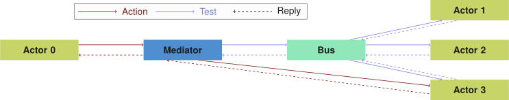

Knowledge Graphs on the Web
are a multifaceted story
- Publication APIs
- Access patterns
- Query languages
- ...
Difficulties for app developers
-
Distinguishing APIs
What kind of API is this?
-
Interacting with APIs
How to efficiently get data from this API?
-
Combining APIs
How to combine data across different APIs?
Queries as abstraction layer
SPARQL, GraphQL, ...
-
Say what needs to happen, not how
Declarative queries hide complexities of data retrieval
-
Queries are reusable
Queries are not API-specific
-
Execution via a generic, reusable query engine
Abstracts away complexities for executing queries
New optimisations can be used by merely updating query engine
Heterogeneity and Federation
-
Understanding any source
Give it any URL, and Comunica will aim to query it as efficient as possible
Linked Data documents, Triple Pattern Fragments, SPARQL endpoints, ...
-
Combining multiple sources
Data can be spread over multiple sources
-
Future: source discovery
All relevant sources may not always be known beforehand
For fully decentralised data (Solid)
Flexible and Modular Meta-Query Engine
-
Collection of building blocks
160+ independent modules implement specific functionality
-
Combining building blocks
Building custom query engines with specific functionality and settings
Using a flexible configuration system
Presets: Comunica SPARQL, Comunica Solid, ...

 ↔
↔
 ↔
↔